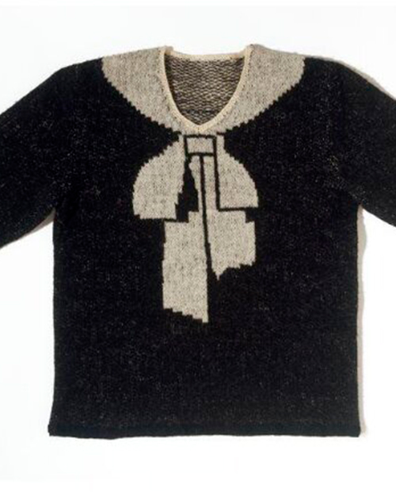

Jersey Jumper

Fecha: 1927
Este diseño de Schiaparelli fue uno de los que impulsaron su carrera. Consiste en un jersey con un trampantojo, en el que parece verse un lazo, mientras que en realidad es parte del patrón de tejido, haciendo uso de efectos ópticos para causar efectos sorprendentes.